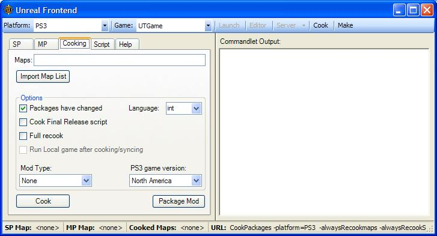

针对PlayStation 3游戏机平台的Mod创建
文档概要：针对PlayStation 3游戏机平台进行mod创建的指南。
文档变更记录: 由Josh Adams创建；由Richard Nalezynski?维护。
安装
概述
- PS3上的Mod支持是基于PC工作包的。没有在PS3上运行的游戏内mod工具。然而，这却为开发人员提供了较大的自由空间，使他们可以制作他们想做的任何东西。(这是合理的，毕竟PS3的内存是有限的，并且它没有虚拟内存)。
- 本文档解释了我们可以做什么操作、如何来做以及如何把mod转移到PS3上。
- 一般的流程如下：
- 创建内容 和/或 书写脚本代码。
- 使用Unreal Frontend (UFE)工具为PS3“烘焙”mod。
- 插入一个PC支持的可移动存储设备。
- UFE将会把mod复制到设备的特定位置。
- 把您的设备放到PS3上，并导入它。
- 在PS3上玩游戏并进行测试。
PS3支持的东西
- PS3支持以下类型的mods。请参照“不支持的部分”获得任何其它限制。
- 地图
- 创建这些mods，并使用UnrealEd保存它们...
- 这些是Epic提供的游戏类型或者您自己的游戏类型的新地图。
- Mutators(设置器)
- 这些mods是使用UnrealScript进行编写的。
- 您可以游戏竞赛过程中选择性地激活这些mods。这些mod的涉及了从替换武器到以奇怪的方式改变重力来影响玩家的运动。
- 这些mod可以自动地从运行新的游戏类型的服务器上进行自动加载，而不需要在PS3客户端上安装mod。注意，那只是作为客户端来玩游戏；要想在服务器(或离线情况下)运行mutator(设置器)，那么您需要按照标准的方式来安装mod。自动加载的mod进会被放到临时缓存中。
- 游戏类型
- 这些mods是使用UnrealScript进行编写的。
- 这一组使用现有地图的新的游戏规则(请参照Total Conversions(完全转换)游戏类型)。
- 游戏类型可以像上面的mutator那样进行自动加载。
- 自定义角色
- 角色部件是UT3中的自定义角色系统的简单的构建块。
- Total Conversions(完全变换)
- Total Conversions(完全变换) 变换或TC意味着使用完全不同的独特内容替换和随同游戏一同发行的所有内容，包括主菜单。
- 在PS3上，主菜单不能被替换，但是它可以用于加载另一个包含TC的主菜单的另一个关卡。然后可以细分这个主菜单来加载TC的地图等。
- 这些一般是新的游戏类型、新的模型和新的关卡的组合物。
- 其它的修改也可能有效，但是这些是我们已经测试获并设计过的内容。
PS3不支持的东西
因为PS3的有限内存的，所以对您能够实现的东西有一些限制。
- Mutators和游戏类型必须仅由UnrealScirpt脚本组成。这意味着您不能使用您的mutator把所有的UT3武器都转换为您导入的“飞牛”模型。
- 这是因为它们不能和发行的地图协同工作，并且添加太多的内容会导致PS3的内存耗尽。
- 不支持导入声音。这是因为UT3使用的是ATRAC3 的私有版本，我们不能发行把.wav文件转换为游戏所要求的格式的工具。
- 我们不知道以后我们是否会有声音转换系统。
- 我们知道这个限制给mod开发人员带来的问题，并且我们将在以后的版本中仅最大可能修复这个问题。
PC上的Mod创建
- 首先，熟悉虚幻引擎3工具包。请参照虚幻开发者网络(UDN - http://udn.epicgames.com)获得关于这些工具的更多信息。
- 本文档没覆盖实用工具或书写脚本代码的内容。请参照UDN获得更多信息。
- 为ps3创建内容和您为PC创建内容的方式一样(遵守上面的限制)。
- 您首先需要在您的PC版本上测试mod，因为这样的迭代时间会更快。注意，为PC mods创建.ini文件和为PS3 mods创建.ini文件的方式是不同的，我们将需要对其进行处理。
- 一旦您准备好后，您便可以把您的mod从PC转移到PS3上了。
- 请参照 Mod File Locations (Mod文件的位置)来获得关于文件放置位置的信息，以便烘焙工具可以找到那些包。
- 您将需要运行UnrealFrontend (UFE)工具。它位于虚幻竞技场3的安装位置的Binaries文件夹中。
- 最重要的标签是Cooking(烘焙)标签:

- 注意，这个工具便是我们内部创建游戏所使用的工具，所以有些选项在制作mod时可能是不需要的。
重要的属性
- 地图： 在这个位置处，您将需要输入您要“烘焙”的包的名称。这命名稍微有点不当，因为当烘焙仅包含脚本代码的mod时您将需要把UnrealScript脚本代码包放到这里(也就是mutator(设置器))。注意： 对于Total Conversion(完全转换)mod来说，要指定地图而不是包含那个游戏类型的脚本包。只要地图指向世界属性中的游戏类型数组中的游戏类型，那么它将把脚本代码烘焙到地图包中，并且它可以正常地工作。
- Full recook(完全重新烘焙): 烘焙是以增量的形式发生的，所以它不会重新烘焙没有改变的东西。但是，如果您想烘焙mod中的所有包，那么请选择这个功能来删除所有增加的改变。这从头开始进行烘焙过程。
- Mod Type（Mod类型）: 这是您选择您制作的mod的类型的地方(请参照上面的“PS3支持的东西”获得关于每种类型的更多信息)。这用于从模板生成配置文件(.ini)。.ini文件用于把mod集成到菜单 和/或 游戏中。如果选择"None"将不会创建.ini文件，所以您需要手动地把它集成到游戏中。
- PS3 game version(PS3游戏版本)： 选择您有的PS3光盘的版本： 这需要提供正确的版本，以便当导入mod时您正在运行的游戏可以在可移动存储设备上找到mod。
- Package Mod（包Mod）: 这个按钮可以用于把一批文件放到可移动存储设备中，并且不需要重新烘焙数据。按下它将会弹出一个对话框，您可以从中选择您需要的文件，仅选择在之前烘焙好的mod中的文件即可。烘焙后的mods放在以下位置：
- \My Games\Unreal Tournament 3\UTGame\Mods\PS3
烘焙
- 要准备数据，请点击 Cook（烘焙）按钮。这将会弹出一个对话框来询问您的mod的名称。这是非常重要的，并且这个名称对于每个mod来说应该是唯一的。在同样的mod上进行迭代时应使用相同的名称。

- 当在PS3上导入mod时，它将覆盖任何和该mod具有同样名称的现有mod（删除之前存在的mod）。
- 然后它将会运行烘焙工具来把数据转换为PS3可以接受的正确格式。* mod类型及其内容(比如 地图和mutator)的不同决定了这个过程速度的快慢。 当您第一次烘焙mod时，它将会提示您核查它生成的.ini文件。(请参照下面的ini文件部分获得更多信息。)


- 选择和那个媒介设备相对应的硬盘字母。它通常会写到设备的根目录中，所以不必浏览到设备的子目录。当复制完成后(目前还没有关于复制完成的正确提示 - 仅需要等到设备再次产生相应即可 ),删除可以动的没接设备，并把它放到PS3上。
- 注意，由于PS3文件的导入限制，您仅在可移动设备上一次仅能有一个mod。当UFE把mod 复制到媒介设备时，它将会覆盖任何已存在的mod。
Mod名称信息
- Mod的名称是非常重要的。某些文件根据mod名称进行特定的命名，并且一旦您选择了mod名称后将不能再对其进行该变。
- 这也意味着您不能取入两个mods（分别在不同的目录中）并把它们组合成一个mod。但是您可以把一个mutator脚本包和几个地图烘焙到同一个mod中！ 如果您这样做了，那么您需要在UFE中选择它们其中的一个作为mod类型，然后手动地编辑.ini文件来包含其它信息。(请参照ini文件部分获得更多信息。)
Ini文件
- 游戏使用.ini文件把mod继承到菜单和游戏中。这些文件是非常重要的！
- UFE将会复制某些模板来生成.ini文件。注意生成的.ini文件可能并不是100%的完美，特别是对于代码mod类型来说。充分理解各种.ini类型的内容是值得的 。
- 以下是各种mod .ini类型的内容列表，并对它们包含的内容进行了解释，可能其中的有些内容是您想修改的(解释文本是以 斜体 出现的)。
地图mods(PS3-UTGame.ini):
[DM-MyMap UTUIDataProvider_MapInfo] |
| 第一行必须是您的地图名称和UTUIDataProvider_MapInfo，把它们包含在中括号内。 |
MapName=DM-MyMap |
| 接下来是磁盘上的地图包的名称。(没有 .xxx 扩展名) |
FriendlyName=MyMap |
| friendly name (有好的名称)是在菜单上显示的名称。 |
PreviewImageMarkup=<Images:UI_FrontEnd_Art.GameTypes.DeathMatch> |
| 您可以在主菜单中加载您自己的图片以供地图预览使用。这里您可以指向您的贴图。请参照其它的ini文件的Functionality (功能)部分获得关于添加额外贴图的更多信息。 |
Description=This is my first map! |
| 这里您可以描述在菜单中显示的地图来提供关于那个地图的更多信息。 |
Mutator(设置器)mods(PS3-UTGame.ini):
[MyMutator UTUIDataProvider_Mutator] |
| 和地图一样，您需要使用mutator名称，后面紧跟着UTUIDataProvider_Mutator |
ClassName=MyMutator.MyMutator |
| 这是您在脚本代码中书写的mutator类的名称 - PackageName.ClassName。注意默认值是使用mod的名称作为packagename(包名称)和classname(类名称)，所以根据您命名您的类的方式的不同，可能需要更新这个值。 |
FriendlyName=MyMutator |
| 这是在mutator列表中看到的mutator的名称。 |
Description=My mutator rocks! |
| 如果原因，您可以提供关于您的mutator的更多信息。 |
[LoadForAllGameTypes]
Package=MyMutator |
| 这是一个非常重要的部分，因为它允许mutator在游戏中被加载。默认情况下，Package (包)被设置为mod的名称，所以可能需要更改。 |
Gametype (游戏类型)mods(PS3-UTGame.ini):
[Engine.PackagesToFullyLoadForDLC]
GameType_PreLoadClass=MyGame.MyGame |
| 输入脚本包的名称和游戏类型类的名称作为PackageName.GameTypeName。这将会告诉游戏当玩上面的游戏类型时加载以下包。注意默认值是使用mod名称作为packagename(包名称)和classname(类名称)，所以根据您命名您的类的方式的不同，您可以能需要对其进行更新。 |
Package=MyGame |
| 注意默认值时使用mod名称作为packagename（包的名称） |
[MyGame UTUIDataProvider_GameModeInfo]
GameMode=MyGame.MyGame |
| 从上面的GameType_PreLoadClass中复制指。 |
FriendlyName=MyGame |
| Name that is listed in the Game Types menu in the game 列在游戏的Game Type(游戏类型)菜单中的名称。 |
Description=This is my first game type. |
| 游戏类型的详细描述。 |
Prefixes=DM |
| 设置您的游戏处理现有的或您自己的地图的前缀(比如DM用于Deathmatch 地图)。 |
PreviewImageMarkup=<Images:UI_FrontEnd_Art.GameTypes.TeamDeathmatch> |
| 您可以在主菜单中加载您自己的图片以供地图预览使用。这里您可以指向您的贴图。请参照其它的ini文件的Functionality (功能)部分获得关于添加额外贴图的更多信息。 |
角色部件mods (UTCustomChar.ini):
[CustomParts]
CustomParts=(Part=PART_Helmet,ObjectName="MyChars.MyHelmet",PartID="MYCHARSA",FamilyID="IRNM") |
| 请参照以下关于部分名称的介绍 |
- 对于Part，它使用以下其中之一来描述身体部分的种类:
- PART_Helmet
- PART_Facemask
- PART_Goggles
- PART_Torso
- PART_ShoPad
- PART_Arms
- PART_Thighs
- PART_Boots
- 对于ObjectName(对象名称)，它使用您创建的网格物体的包和对象的名称。
- 对于PartID，使用唯一的名称。
- 对于FamilyID，在菜单中使用一个其中之一来选择这个部分是属于那种身体类型的。
- IRNF – IronGuard Male(IronGuard 男性)
- IRNM – IronGuard Female(IronGuard 女性)
- KRAM – Krall Male(Krall 男性)
- LIAM – Liandri Female(Liandri 女性)
- NECF – Necris Female(Necris 女性)
- NECM – Necris Male(Necris 男性)
- TWIF – TwinSouls Female(TwinSouls 女性)
- TWIM – TwinSouls Male（TwinSouls 男性） *注意： 新的头部不能在PS3上进行使用，因为它们是基于全新的角色的，它们在PS3上是不可以修改的。最好的解决方法是制作一个头盔来覆盖整个现有的头部。
Total conversion (完全转换)mods(PS3-UTGame.ini):
- Total conversions(完全转换)是Game Type(游戏类型)mod和Map(地图)mod的结合物，所以您可以参照上面的描述来改变它的设置。 *注意： 对于Total Conversion(完全转换)mod来说，要指定地图而不是包含那个游戏类型的脚本包。只要地图指向世界属性中的游戏类型数组中的游戏类型，那么它将把脚本代码烘焙到地图包中，并且它可以正常地工作。
其他信息
- 注意，您可以在.ini文件中添加多个元素项，比如在一个.ini文件中的多个地图等。在某些生成的.ini文件中有一些注意事项。
其它的Ini功能(技术细节)
- 仅支持某些ini文件部分。当打包mod时，UFE将会验证它其中的.ini文件，以确保它们不包含任何不符合规定的部分。
- 但是，您可以修改除了上面所述的不符合规定的部分以外的部分，您需要做的操作根据您的mod来决定。需要了解的最重要的部分是[Engine.PackagesToFullyLoadForDLC]。注意,属于DLC (DownLoadable Content[可现在的内容])和Mods是可以互换的(唯一的不同是您从哪里获得了那个mod - 是通过用户导入还是通过Playstation Store导入的)。
- 部分有以下的格式：
[Engine.PackagesToFullyLoadForDLC]
MapName=UTFrontend
Package=MyModContent1
Package=MyModContent2
GameType_PreLoadClass=MyGame.MyGame
Package=MyGameContent1
GameType_PostLoadClass=MyGame.MyGame
Package=MyGameContent2
- 这将告诉引擎完全加在满足特定需要的包。这是因为控制台游戏平台不会加载包中的独立的对象，它仅加载整个包。
- 一般，当烘焙mod时，将会把mod所需的所有东西都放入到包中，但是如果有一个调用DynamicLoadObject 的脚本代码或者类似的代码，那么该对象将不会被烘焙到包中，所以在调用DynamicLoadObject之前您需要加载整个包。
- 上面的部分可以基于特定的地图或游戏类型控制包的加载。
- 比如，要想加载游戏类型mod，在游戏使用那个游戏类型对象作为游戏类型之前，它需要加载包含那个游戏类型的整个脚本包。
- 这个功能的一个非常有意思的应用是MapName=UTFrontend。如果您想获得您地图的 图标/预览 图片时，您将需要把贴图对象的名称放到.ini文件的PreviewImage 行处，但是首先您需要完全地加载包。通过在您的.ini文件中使用 MapName=UTFrontend，它可以保证当加载主菜单(UTFrontend)时加载包含您的贴图的包。然后便可以找到贴图。
- 您可以把您的贴图放到UI LOD组中，并使用UFE cooker 烘焙包含那个贴图的包(在Msps行)。
PS3上的导入
- 当把UFE已经把mod复制到媒介设备上后，简单地把它插到您的PS3上。
- 在主菜单中，跳转到Community 部分。然后选择 My Content(我的内容)。这将会显示一个您安装的mod列表。按下Square(正方形)来弹出导入对话框。这个标准的PS3对话框允许您选择从哪个设备上进行导入。
- 选择那个设备，选择Yes(是)导入它，然后先等待把mod复制到PS3硬盘上，然后对其解压。这个过程所花费的时间的多少是有mod的大小和类型决定的。
- 对于除了角色部件之外的所有mod类型来说，新的项都可以在适当的菜单中找到。比如，一个新的Deathmatch地图，您可以通过跳转到 Instant Action(即时战斗)、选择Deathmatch(死亡竞技)，然后您便会找到您的地图。
- 对于角色部件来说，您将需要退出游戏到XMB/System 软件，然后在重新运行游戏。
Mod文件位置和其它细节
- 以下内容提到的 指向“My Documents\My Games”目录。
- 脚本代码：
- 当编译脚本代码时，您把您的脚本文件放在以下目录中：
<UserDirectory>\UTGame\Src\<ScriptPackageName>\Classes
<UserDirectory>\UTGame\Config\UTEditor.ini
-
- 如果[ModPackages]部分不存在，您需要创建这个部分，然后添加：
ModPackages=<ScriptPackageName>
-
- 您创建的每个脚本包都需要有一个ModPackages 行。
- 要想进行编译，请使用UFE (Script (脚本)标签的Compile Scripts(编译脚本)按钮，或者工具条上的Make(制作)按钮)，或者在Binaries目录下从命令行中运行一下命令：
- 地图：
- 当您在编辑器中保存地图时，应该把它保存到以下目录：
<UserDirectory>\UTGame\Unpublished\CookedPC\CustomMaps
- 自定义的角色部件
- 当您在编辑器中保存这些包时，应该把它保存到以下目录：
<UserDirectory>\UTGame\Unpublished\CookedPC\CustomChars
-
- 你必须把自定义的角色的包标记为不可下载状态。为了完成这个操作，在您游戏安装目录的Binaries目录下运行一下命令行开关：
UT3 setpackageflags ..\UTGame\CookedPC\CustomChars\<charmodname>.upk serversideonly=TRUE
把您的作品和其它人共享
- 一旦您准备好后，您或许项和其他人共享您的mod，以便您可以在线玩该mod。
- 对于仅具有代码的mods而言，连接到服务器的客户端将可以把代码下载到客户端的PS3硬盘中。这个mod代码不会在客户端进行完全的安装，所以客户端不能独自地使用这个mod，但是它允许客户端连接到服务器而不需要下载mod。
- 对于内容mods而言，客户端在加入到服务器运行mod之前，它需要把mod安装到它们的PS3上(UT3不支持下载像地图这么大的文件)。
- 如果想把您的mod和其他人共享，您可以简单地把可移动设备的 PS3 目录复制到您的PC硬盘上，将其存档，然后把它上传到其它人可以下载的地方。
- 然后，其他人仅需要下载那个存档，把它解压到某种类型的可移动媒介上，然后按照标准的方式在PS3上安装它即可。